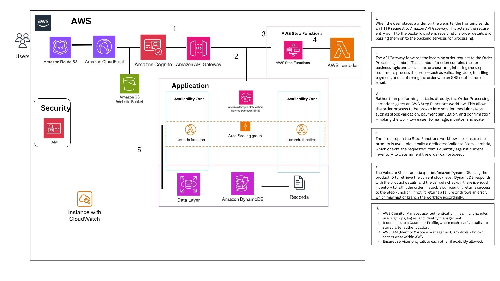
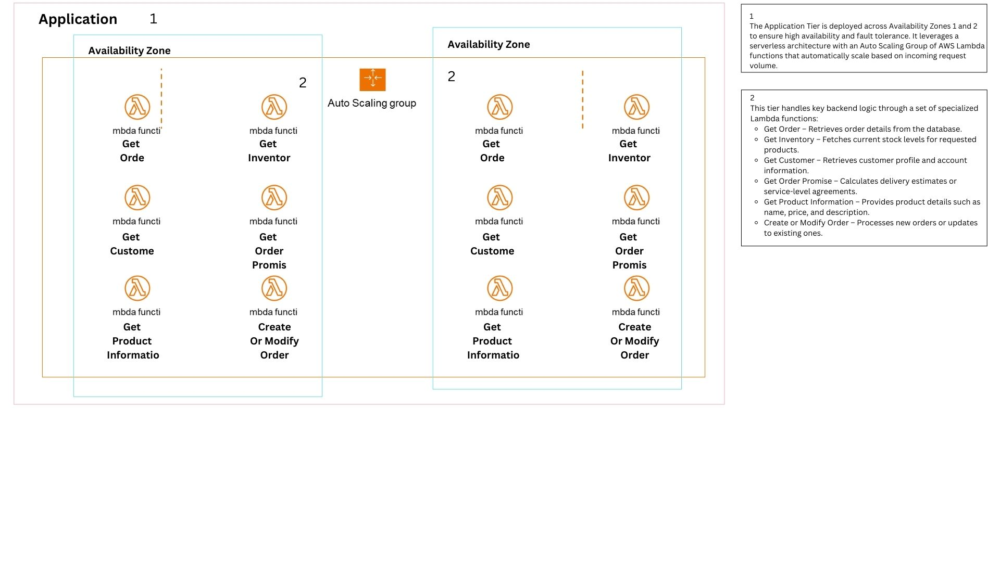
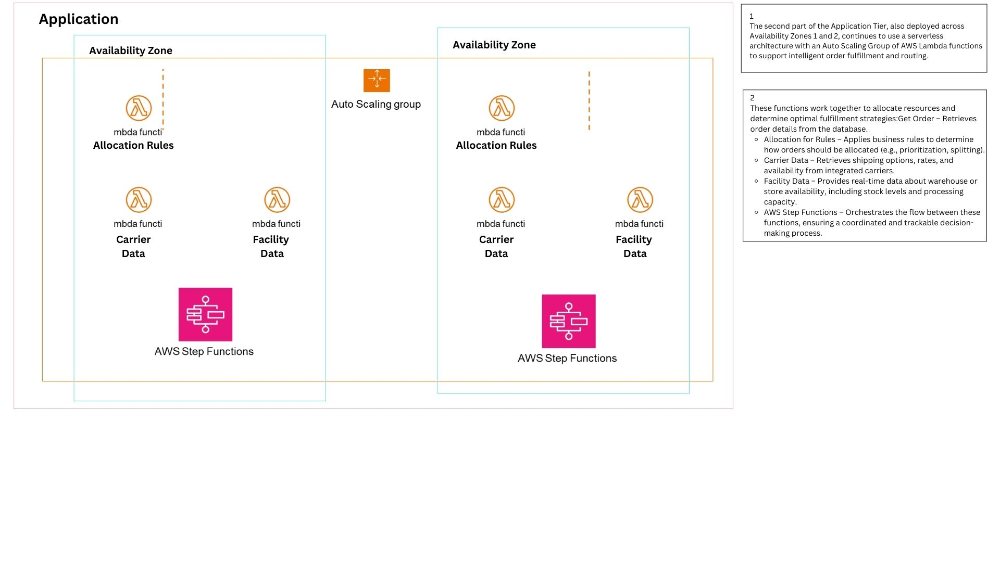
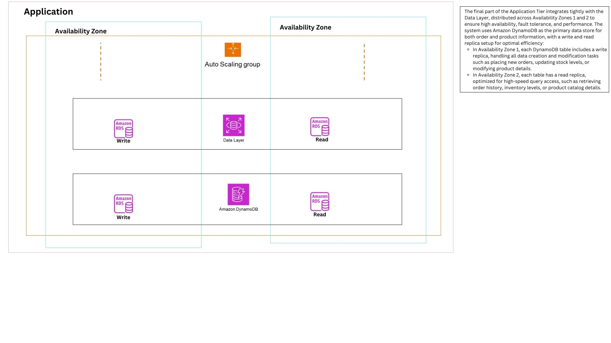

Project Overview
Robo Corp is a serverless order management system that enables users to place orders, look up order details, view product information, and check inventory — all through a web UI backed by AWS Lambda functions, API Gateway, DynamoDB, Redis/Valkey caching, and Cognito authentication.
Technology Stack
Team
Reference Architecture
The system architecture spans a multi-AZ deployment with DynamoDB read/write replicas, API Gateway as the entry point, Lambda functions for business logic, and Redis/Valkey for caching.




Sprint 1 — Authentication & Authorization Planned
User Signup
Allow new users to register via AWS Cognito.
- Design signup UI
- Implement Cognito signup API call
- Implement backend validation
- Write unit/integration tests
User Login (Cognito)
Allow registered users to log in and manage sessions.
- Design login UI
- Implement Cognito login API call
- Handle sessions/tokens
- Write unit/integration tests
Password Reset
Allow users to reset forgotten passwords.
- Design password reset UI flow
- Implement Cognito password reset API calls
- Write unit/integration tests
Role-Based Access Control (IAM Integration)
Restrict access based on user roles.
- Define user roles (Admin, User, etc.)
- Integrate Cognito groups/roles with IAM policies
- Implement authorization checks in API/Lambdas
Sprint 2 — Infrastructure & Frontend Foundation In Progress
Setup S3 Website Hosting
Configure S3 for static site hosting with CodeBuild integration.
- Create S3 bucket
- Set bucket policies
- Assign Roles to Bucket
- Write IaC
- Peer review IaC
- Configure CodeBuildProject
Configure CloudFront Distribution
Set up CDN for frontend delivery with HTTPS.
- Create CloudFront distribution
- Point distribution to S3 origin
- Configure caching behavior
- Configure HTTPS (ACM)
Basic UI Shell / Framework Setup
Initialize the frontend project structure.
- Choose framework (React, Vue, Angular, etc.)
- Setup project structure
- Implement basic layout/navigation
Implement Login UI
Build the login form component.
- Create login component
- Integrate with Login API Story
Implement Order Creation Form
Build the form for creating orders.
- Design order form UI
- Create order form component
- Integrate with Create Order API
Implement Order History View
Display past orders for the user.
- Design order history UI
- Create order history component
- Integrate with Get Order API
Sprint 3 — API Gateway & Lambda Connections In Progress
Setup API Gateway
Configure the main API entry point.
- Create REST API in API Gateway
- Define stages (dev, staging, prod)
- Configure logging/tracing
- Write IaC
Create Lambda Functions
Deploy all five core Lambda functions.
- CreateOrder
- GetOrder
- GetInventory
- GetProductInfo
- ModifyOrder
Gateway Connection for All Functions
Connect Lambda functions to API Gateway endpoints and the HTML frontend.
- Connect CreateOrder to POST /create-order
- Connect GetOrder to GET /get-order
- Connect GetInventory to GET /get-inventory
- Connect GetProductInfo to GET /get-product-info
- HTML website connected to API Gateway
Develop 'Create Order' Lambda Function
Complete business logic for order creation.
- Create Lambda function code
- Add input validation logic
- Implement inventory check call
- Implement logic to write order data to RDS
- Implement error handling
- Add logging
- Write unit tests
- Write integration tests (API Gateway → Lambda → RDS)
Define Order API Endpoints
Specify API contracts for orders (Create, Read, Update).
- Define POST /orders endpoint
- Define GET /orders/{id} endpoint
- Define PUT /orders/{id} endpoint
- Define request/response models (JSON Schema/Swagger)
- Integrate with corresponding Lambda functions
- Configure endpoints in API Gateway
Define Product Info API Endpoint
Specify API contracts for products.
- Define GET /products/{id} endpoint
- Define GET /products endpoint (list/search)
- Define request/response models
- Configure endpoints in API Gateway
- Integrate with Get Product Info Lambda
Define Inventory API Endpoint
Specify API contracts for inventory.
- Define GET /inventory/{productId} endpoint
- Define request/response models
- Configure endpoint in API Gateway
- Integrate with Get Inventory Lambda
Configure Custom Domain & TLS
Setup api.yourdomain.com with HTTPS.
- Request/Import TLS certificate in ACM
- Create Route 53 record
- Write IaC
Implement WAF Rules
Protect API from common attacks.
- Create WAF WebACL
- Associate WebACL with API Gateway stage
Sprint 4 — Database Layer & Lambda Logic In Progress
Define Database Schema
Design the relational data model.
- Define Customer ID
- Define items
- Define productId
- Define quantity
- Define Total
Provision RDS Cluster (Multi-AZ)
Set up the main database with Redis/ElastiCache.
- Choose RDS engine (Redis)
- Configure instance size, storage
- Configure network/subnet groups
Implement Database Connection Logic in Lambdas
Connect backend code to RDS.
- Add database driver/library
- Implement connection pooling (if applicable)
Develop 'Get Order' Lambda Function
Code for retrieving order details.
- Create Lambda function code
- Implement logic to read order data from RDS
- Format response data
- Add logging
- Write unit tests
- Write integration tests
Develop 'Get Inventory' Lambda Function
Code for checking stock levels.
- Create Lambda function code
- Implement logic to read inventory data (from RDS/other)
- Write unit tests
Develop 'Get Product Info' Lambda Function
Code for retrieving product details.
- Create Lambda function code
- Implement logic to read product data from RDS
- Write unit tests
Develop 'Modify Order' Lambda Function
Code for updating existing orders.
- Create Lambda function code
- Implement validation logic (e.g., cannot modify shipped)
- Implement logic to update order data in RDS
- Write unit/integration tests
Develop 'Get Customer Order Promise' Logic
Calculate estimated delivery.
- Create Lambda/Step Function logic
- Integrate geo/proximity rules
- Integrate carrier data
- Write unit/integration tests
Define DynamoDB Schemas & Indexes
Design NoSQL data models.
- Define primary keys for Sessions table
- Define primary keys/indexes for Carts table
- Define primary keys/indexes for Logs table
Provision DynamoDB Tables
Set up NoSQL tables (Sessions, Carts, Logs).
- Create Sessions table
- Create ShoppingCarts table
- Create EventLogging table
- Configure capacity mode (On-demand/Provisioned)
- Write IaC
Implement DynamoDB Access Logic
Connect backend code to DynamoDB.
- Add AWS SDK
- Write code for PutItem, GetItem, Query, etc.
Configure DynamoDB Backups & Security
Ensure NoSQL data safety.
- Configure on-demand or continuous backups (PITR)
- Configure encryption at rest (KMS)
- Configure IAM policies for access
Configure RDS Backups & Security
Ensure data safety and access control.
- Configure automated backup schedule
- Configure encryption at rest (KMS)
- Configure security group access
Setup Read Replicas
Improve read performance.
- Create RDS read replica
- Configure application to use read endpoint
- Write IaC
Sprint 5 — Security, Networking & Orchestration Planned
Configure Security Groups & NACLs
Firewall rules for resources.
- Define required inbound/outbound rules for SGs
- Define NACL rules for subnets
- Write IaC
Setup Step Functions Workflow
Orchestrate complex order processes.
- Design state machine diagram
- Implement state machine definition (JSON/YAML)
- Integrate Lambda functions
- Write IaC
Configure Auto Scaling for Lambdas/Compute
Ensure performance under load.
- Configure provisioned concurrency for Lambdas (if needed)
- Configure Auto Scaling groups for EC2/ECS (if used)
Setup KMS Keys for Encryption
Manage encryption keys.
- Create customer-managed KMS key
- Define key policy
- Write IaC
Setup Foundational IAM Roles & Policies
Define access permissions.
- Identify necessary roles (Lambda, API GW, etc.)
- Define least-privilege policies
- Write IaC for Roles/Policies
Configure Secrets Manager for Credentials
Securely store secrets.
- Store database credentials
- Store third-party API keys
- Configure resource policies for access
- Write IaC
Define VPC and Subnet Strategy
Plan network layout.
- Define CIDR ranges
- Define public/private subnet layout across AZs
- Document network diagram
- Write IaC for VPC/Subnets
Final Presentation Prep
- Group meeting to go over final presentation and assign final tasks
Sprint 6 — CI/CD Build Pipeline Planned
Create Build & Unit Test Workflow
Automate build validation with GitHub Actions.
- Create GitHub Actions workflow file
- Add steps for code checkout, dependency installation
- Add step for running unit tests
- Add step for linting/static analysis
Sprint 7 — Data Warehouse & Analytics Planned
Provision Redshift Cluster
Set up data warehouse.
- Choose node type and cluster size
- Configure network/security groups
- Write IaC
Setup Glue ETL Job — RDS to Redshift
Move relational data to the warehouse.
- Create Glue job script (PySpark/Scala)
- Define source (RDS) and target (Redshift) connections
- Define transformations
- Schedule Glue job trigger
Setup Glue ETL Job — DynamoDB to Redshift
Move NoSQL data to the warehouse.
- Create Glue job script
- Define source (DynamoDB) and target (Redshift) connections
- Define transformations
Define Analytics Schemas in Redshift
Design warehouse data model.
- Define fact and dimension tables
- Define distribution and sort keys
Sprint 8 — Infrastructure as Code Planned
Implement Infrastructure as Code (IaC)
Manage all infrastructure via code.
- Choose IaC tool (CloudFormation/Terraform)
- Structure IaC repository/modules
- Integrate IaC into CI/CD pipeline
Sprint 9 — Full DevOps Pipeline & Production Readiness Planned
Setup GitHub Repository Structure
Organize codebase for production.
- Create main repository
- Define branching strategy (e.g., Gitflow)
- Configure branch protection rules
Create Dev Deployment Workflow
Automate deployment to dev environment.
- Create GitHub Actions workflow file (trigger on dev merge)
- Add steps for building artifacts
- Add steps for deploying application code (Lambda, S3)
- Add steps for deploying IaC changes
Create Staging/Prod Deployment Workflow
Automate deployment to higher environments.
- Create GitHub Actions workflow file (manual/release trigger)
- Add steps for building artifacts
- Add steps for deploying application code
- Add steps for deploying IaC changes
- Add approval steps (if needed)
Integrate IaC into Deployment Pipelines
Ensure infra changes are deployed automatically.
- Add IaC plan/apply steps to workflows
- Configure state file management
Production VPC & Subnet Strategy
- Define CIDR ranges
- Define public/private subnet layout across AZs
- Document network diagram
- Write IaC for VPC/Subnets
- Peer review IaC
- Deploy to Dev environment
Production IAM Roles & Policies
- Identify necessary roles (Lambda, API GW, etc.)
- Define least-privilege policies
- Write IaC for Roles/Policies
- Peer review IaC
- Deploy to Dev environment
Production S3 Website Hosting
- Create S3 bucket
- Configure bucket for static website hosting
- Set bucket policies
- Write IaC
- Peer review IaC
- Deploy to Dev
Production Secrets Manager
- Store placeholder database credentials
- Write IaC
- Deploy to Dev
Production RDS Cluster (Multi-AZ)
- Choose RDS engine (e.g., PostgreSQL)
- Configure instance size, storage
- Enable Multi-AZ deployment
- Configure network/subnet groups
- Write IaC
- Peer review IaC
- Deploy to Dev
Production Database Schema
- Define Orders table columns/types
- Define OrderItems table columns/types
- Create SQL migration scripts
- Apply migrations to Dev DB
Production API Gateway
- Create REST API in API Gateway
- Define stages (dev)
- Write IaC
- Deploy to Dev
Production 'Get Order' Lambda
- Create Lambda function code (basic structure)
- Implement logic to read order data from RDS
- Write basic unit tests
Production DB Connection Logic
- Add database driver/library to Get Order Lambda
- Implement connection logic using Secrets Manager
Production Order API Endpoints
- Configure GET /orders/{id} endpoint in API Gateway
- Integrate with Get Order Lambda function